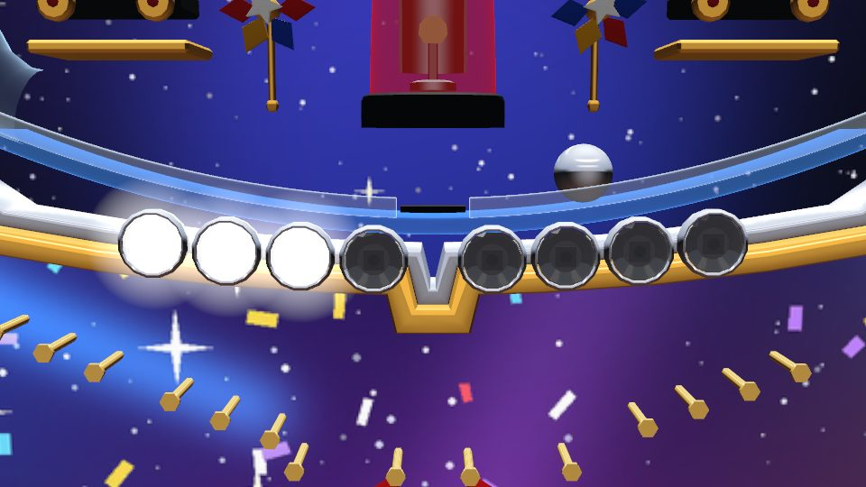
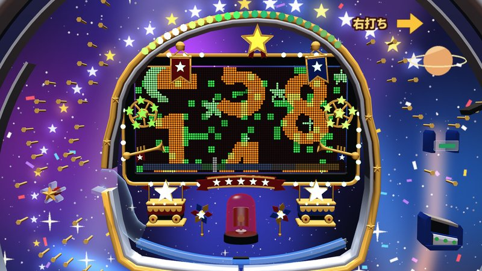
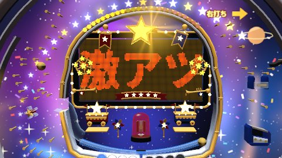
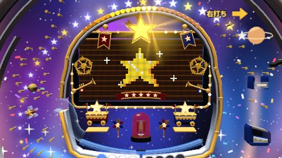
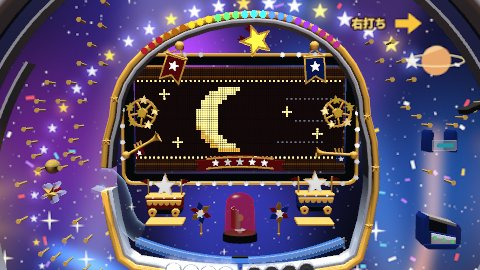
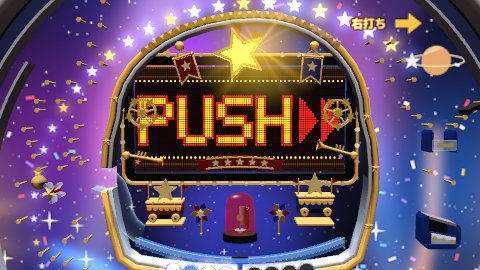
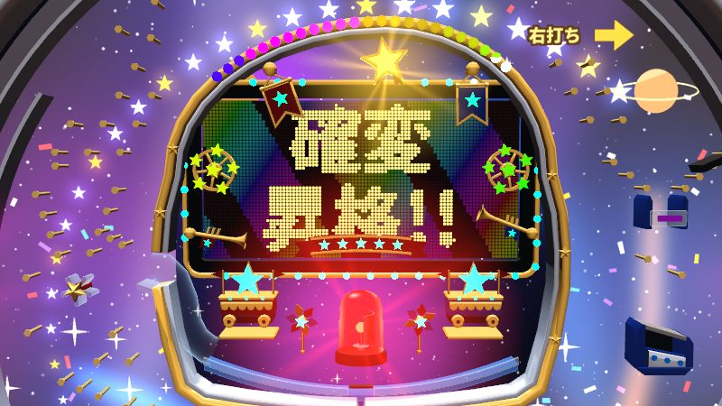
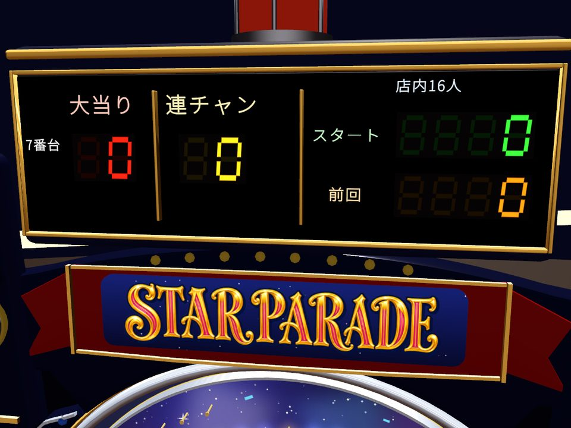

最後更新：2026-11-28（週六）
STAR PARADE

點陣顯示加警示燈的確變循環機。確變持續到下次大當，通常大當之後是時短（Chance Time）15次。設置在島台前排（南側）西端，共4台。
規格
| 大當機率 | 1/69.7 |
|---|---|
| 確變中 | 1/20.0 |
| 確變 | 到下次大當 |
| 時短 | 15次（Chance Time） |
| 突入率 | 約69%（含拉回） |
| 繼續率 | 約81%（含拉回） |
| 回合 | 6R、3R（每R 10個計數） |
| 出珠量 | 6R約480顆、3R約240顆 |
| 賞球 | 啟動口3、電動入口2、大獎口8、入賞口3 |
| 250顆轉的次數 | 約35次（試算，含止打） |
| 機械割 | 約141%（試算） |
※Chance Time 15次的拉回機率約19%。盈虧平衡線調查中。
大當分配
| 入賞口 | 6R確變 | 3R確變 | 3R通常 |
|---|---|---|---|
| 啟動口 | 10% | 51% | 39% |
| 電動入口（電チュー） | 25% | 51% | 24% |
※777是6R確變，其他奇數是3R確變，偶數是3R通常。偶數也有確變升格機會。
普圖、電動輔助
| 通常 | 確變、Chance Time | |
|---|---|---|
| 普圖中獎 | 1/16 | 9/10 |
| 普圖變動 | 12秒 | 1.2秒 |
| 電動入口開啟 | 0.15秒×1次 | 1.6秒×2次 |
打法
- 力道是自動的
- 大當、確變、Chance Time中會自動右打
| 左打 | 經過天釘、袴釘、風車、道釘、跳躍釘和命釘，進入啟動口。從役物左肩進入傳送口的鋼珠，會從舞台經過中間的洞和隧道，掉到啟動口正上方 |
|---|---|
| 右打 | 依序經過回彈膠、通過閘門、電動入口、大獎口 |
模式
| 模式 | 機率 | 辨認方式 |
|---|---|---|
| 通常 | 1/69.7 | 一般的邊框 |
| 確變 | 1/20.0 | 液晶邊框有紅光和金光繞圈。盤面的光是紅紫色 |
| Chance Time | 1/69.7 | 藍色邊框。上方顯示剩餘次數，剩5次起開始倒數 |


演出信賴度
※信賴度為解析值（通常時）。50%以上和確定以紅字標示。
保留顏色
| 顏色 | 信賴度 |
|---|---|
| 藍 | 1.7% |
| 綠 | 7.0% |
| 紅 | 31.0% |
| 金 | 64.1% |
| 彩虹 | 確定 |
Reach（聽牌）
| 演出 | 信賴度 |
|---|---|
| 普通Reach | 3.1% |
| 超級Reach | 25.4% |
| 全迴轉 | 確定 |
| 最終決戰（PUSH） | 51.6% |
預告
| 顏色 | 夜空預告 | 流星預告 |
|---|---|---|
| 整體（不分顏色） | 1.3% | 18.4% |
| 白 | 0.2% | 3.5% |
| 藍 | 0.7% | 10.1% |
| 綠 | 1.7% | 23.1% |
| 紅 | 6.3% | 52.9% |
| 金 | 23.5% | 83.8% |
| 彩虹 | 確定 | 確定 |
階段預告
| 演出 | 信賴度 |
|---|---|
| 到階段1 | 4.3% |
| 到階段2 | 10.6% |
| 到階段3 | 34.1% |
| 到階段4 | 66.9% |
| 到階段5 | 91.0% |
擬似連
| 演出 | 信賴度 |
|---|---|
| ×2 | 6.0% |
| ×3 | 28.7% |
| ×4 | 50.9% |
變動開始
| 演出 | 信賴度 |
|---|---|
| 蓄力 | 1.6% |
| 逆轉 | 4.0% |
| 顫抖 | 13.2% |
| 逐一 | 22.9% |
| 閃光 | 48.8% |
| 落下 | 1.9% |
| 吸入 | 2.1% |
| 從右邊 | 10.8% |
| 角色推入 | 41.4% |
數字的轉法
| 演出 | 信賴度 |
|---|---|
| 倒轉 | 2.1% |
| 翻頁 | 7.1% |
| 滾筒 | 11.4% |
| 洗牌 | 24.0% |
預兆（在上方奔跑的角色）
| 演出 | 信賴度 |
|---|---|
| 夥伴（3隻） | 1.1% |
| 大遊行（6隻） | 2.6% |
| 金 | 12.9% |
| 彩虹 | 66.0% |
Reach中的預告
| 演出 | 信賴度 |
|---|---|
| 夜空預告 | 14.8% |
| 流星預告 | 30.2% |
超級Reach的後半
| 演出 | 信賴度 |
|---|---|
| 逐格播放 | 11.3% |
| 改塗 | 29.9% |
| 倒數 | 18.5% |
| 流星 | 57.7% |
普通Reach的呈現
| 演出 | 信賴度 |
|---|---|
| 標準 | 2.4% |
| 放大 | 4.3% |
Reach的結束方式
| 演出 | 信賴度 |
|---|---|
| 硬停 | 6.5% |
| 滑動 | 18.8% |
| 退回 | 21.7% |
| 搖晃 | 9.4% |
| 最後一刻停住 | 29.4% |
役物
| 演出 | 信賴度 |
|---|---|
| 星星落下 | 82.5% |
機會目
| 演出 | 信賴度 |
|---|---|
| 311（後面的保留會中） | 60.7% |
確定演出
彩虹保留、黑屏、變動開始時的警示燈、復活、凍結、全滅燈
演出解說
數字
數字是橙色的點陣字，平常縱向流動著轉。
保留
保留在啟動口和電動入口各最多4個，電動入口優先。顏色依序是藍、綠、紅、金、彩虹，金色起就是激熱，彩虹則是確定。


預告、擬似連
- 夜空預告偏弱，流星預告偏熱。兩者的顏色都分6階（白、藍、綠、紅、金、彩虹）。流星預告的紅色起就是激熱，彩虹則是確定
- 預告在Reach中也會出現


預告的顏色（分格圖）



擬似連（分格圖）


Reach（聽牌）
- Reach的線是金色，超級Reach的數字是紅色
- 普通Reach的呈現是標準和放大。超級Reach的後半型態是逐格播放、倒數、改塗、流星
- 流星：流星5次擊中中間的數字，每次擊中數字都會變。第4次是差1個就連線的數字
- 超級Reach中，點陣顯示上的星星和月亮會幫忙加油。如果會中，月亮就會變成滿月
- 最終決戰時，點陣顯示前面會出現PUSH按鈕
超級Reach的流程（分格圖）




插入畫面和PUSH的圖案有好幾種




警示燈
役物裡的旋轉燈。只要轉起來就是大當。
| 變動開始時 | 4% |
| Reach成立時 | 18% |
| 當落時（Reach的結果揭曉） | 78% |
特殊演出、隱藏要素、小情報
※有劇透。點一下展開
特殊演出（確定大當）
| 演出 | 內容 |
|---|---|
| 黑屏 | 變動開始時畫面暗很久，然後直接進入全迴轉 |
| 凍結 | 變動開始的同時一切停止、聲音消失，接著發光並直接進入全迴轉 |
| 全滅燈 | 液晶和機台的燈飾全部熄滅、聲音也消失，接著發光並直接進入全迴轉 |
| 變動開始時的警示燈 | 一開始轉動就轉起警示燈 |
| 彩虹 | 彩虹保留、彩虹預告（夜空、流星） |
| 全迴轉 | 只在黑屏、凍結、全滅燈之後出現。以333或777連線。轉到最後，維持彩虹色停止 |
| 復活 | 超級Reach中先裝成沒中，之後才中 |

隱藏要素
- 確變升格機會：以偶數連線後，先進入機會時間（時短15次）。時短的最後一轉落空後會再次變動，如果停在奇數就升格為確變。3R確變中有30%是先以偶數連線再升格，3R通常中有40%是挑戰升格卻失敗
- 保留先讀：保留進來時，看到的顏色可能比真正的顏色低1〜2階。等待期間會一階一階往上升，沒升完的部分會在變動開始時的機會提升中補上。如果變動開始時只有白色保留閃一下，那就是假的
- 機會區：先讀的區域。前面有2個以上保留時才會出現。一旦進入機會區，至少會是超級Reach
- 期待度計：邊框左右的燈飾會由下往上依序亮起藍、綠、紅、金。只有彩虹保留、黑屏、全迴轉，或是在當落時中獎，才會升到彩虹色
- 星星役物：在超級Reach的第2階落下就有92.9%。就算失望退回去，復活時還會再落下

小情報
- 機會目311：沒有Reach的落空中，如果停在311就會發出金光並彈跳。後面的保留有中獎時比較容易出現，信賴度60.7%。不會碰巧停在311
- 確變、Chance Time中不會出現預告、階段預告、擬似連、變動開始演出
數據顯示器

機台上方有大當、連莊、開始、上次4項和店內人數。